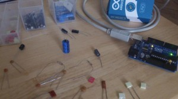

I was blown away with the interest in the Capacitance Meter for the Arduino Uno, and that encouraged me to think about how I could improve it.

Scott made a comment on the Hackaday post, and suggested using the internal pullup resistor to cover higher capacitances. I had initially ruled that out because it wouldn’t work for low value capacitors (less than about 1nF). But thinking about it again, I realized that this method could be used to extend the range up to uF values. By combining this with the method in the Mk I Capacitance meter, I could make a capacitance meter that could measure from 1pF to over 1000uF – with no external components!
Actually getting this to work proved slightly more complicated than I first thought. The basic idea was going to be:
- Test the capacitor using the stray capacitance method. If the capacitor is less than 1nF then we are done.
- Otherwise, we start charging the capacitor using the internal pullup.
- After a certain amount of time (maybe the RC time constant), the capacitor will have reached a certain voltage.
- Using the charge time and voltage (or more specifically the ratio of the capacitor voltage to the charging voltage) we can work out the capacitance.
The time to charge larger capacitors would be in the order of milliseconds. This would be quite easy to measure with a reasonable degree of accuracy. But the RC time constant of a 1nF capacitor with a 30k pullup is about 30us. Which is more difficult to measure accurately. I thought about using interrupts, and using a hand-crafted ADC conversion method (analogRead takes about 100us – and you can do the conversion much faster than this), but I didn’t want the code to get too complicated, and I wanted to stick to the standard Arduino routines. So I came up the the following code:
View Code
const int OUT_PIN = A2;
const int IN_PIN = A0;
//Capacitance between IN_PIN and Ground
//Stray capacitance value will vary from board to board.
//Calibrate this value using known capacitor.
const float IN_STRAY_CAP_TO_GND = 24.48;
const float IN_CAP_TO_GND = IN_STRAY_CAP_TO_GND;
//Pullup resistance will vary depending on board.
//Calibrate this with known capacitor.
const float R_PULLUP = 34.8; //in k ohms
const int MAX_ADC_VALUE = 1023;
void setup()
{
pinMode(OUT_PIN, OUTPUT);
//digitalWrite(OUT_PIN, LOW); //This is the default state for outputs
pinMode(IN_PIN, OUTPUT);
//digitalWrite(IN_PIN, LOW);
Serial.begin(115200);
}
void loop()
{
//Capacitor under test between OUT_PIN and IN_PIN
//Rising high edge on OUT_PIN
pinMode(IN_PIN, INPUT);
digitalWrite(OUT_PIN, HIGH);
int val = analogRead(IN_PIN);
digitalWrite(OUT_PIN, LOW);
if (val < 1000)
{
//Low value capacitor
//Clear everything for next measurement
pinMode(IN_PIN, OUTPUT);
//Calculate and print result
float capacitance = (float)val * IN_CAP_TO_GND / (float)(MAX_ADC_VALUE - val);
Serial.print(F("Capacitance Value = "));
Serial.print(capacitance, 3);
Serial.print(F(" pF ("));
Serial.print(val);
Serial.println(F(") "));
}
else
{
//Big capacitor - so use RC charging method
//discharge the capacitor (from low capacitance test)
pinMode(IN_PIN, OUTPUT);
delay(1);
//Start charging the capacitor with the internal pullup
pinMode(OUT_PIN, INPUT_PULLUP);
unsigned long u1 = micros();
unsigned long t;
int digVal;
//Charge to a fairly arbitrary level mid way between 0 and 5V
//Best not to use analogRead() here because it's not really quick enough
do
{
digVal = digitalRead(OUT_PIN);
unsigned long u2 = micros();
t = u2 > u1 ? u2 - u1 : u1 - u2;
} while ((digVal < 1) && (t < 400000L));
pinMode(OUT_PIN, INPUT); //Stop charging
//Now we can read the level the capacitor has charged up to
val = analogRead(OUT_PIN);
//Discharge capacitor for next measurement
digitalWrite(IN_PIN, HIGH);
int dischargeTime = (int)(t / 1000L) * 5;
delay(dischargeTime); //discharge slowly to start with
pinMode(OUT_PIN, OUTPUT); //discharge remainder quickly
digitalWrite(OUT_PIN, LOW);
digitalWrite(IN_PIN, LOW);
//Calculate and print result
float capacitance = -(float)t / R_PULLUP
/ log(1.0 - (float)val / (float)MAX_ADC_VALUE);
Serial.print(F("Capacitance Value = "));
if (capacitance > 1000.0)
{
Serial.print(capacitance / 1000.0, 2);
Serial.print(F(" uF"));
}
else
{
Serial.print(capacitance, 2);
Serial.print(F(" nF"));
}
Serial.print(F(" ("));
Serial.print(digVal == 1 ? F("Normal") : F("HighVal"));
Serial.print(F(", t= "));
Serial.print(t);
Serial.print(F(" us, ADC= "));
Serial.print(val);
Serial.println(F(")"));
}
while (millis() % 1000 != 0)
;
}
I’ll try to explain why I coded it this way… I tried using analogRead() to determine when the capacitor had charged up to a certain value. This could work, but analogRead() is very slow so I decided to use the input as a digital input to start with. When the input gets to about 2.5V the input will change from 0 to 1 and we stop charging the capacitor. At this point we really can’t be sure what the the voltage is across the capacitor, so we use analogRead to get an accurate value. We have taken timestamps at the start and end of the charging process, so now we have everything we need to determine the capacitance. The maths behind this is as follows:
{kind=link}
For the circuit above, the formulas that we need are:
{kind=link}
Initially I assumed that the pullup resistor had a value of 30k. This won’t be correct and should be calibrated using a capacitor of a known value. Something around about 100nF – 1uF should give a good measurement (don’t use an electrolytic – these tend to have very poor tolerance, typically -20%, +80%!). By putting these numbers into the last formula, we can determine the actual pullup resistance.
I used a 1uF capacitor and got the following result:
Capacitance Value = 1.00 uF (Normal, t= 24704 us, ADC= 520)
[Note that at this point the measured capacitance probably won’t be 1.00uF]
Putting these numbers (C = 1e-6F, t = 0.024704s, Vc=520, Vin=1023) into the last formula gives us the result: R = 34.80 kΩ (34800Ω). For C we should use the expected value (1.00uF) rather than the measured value which, as previously stated, is likely to be different until we have done the calibration.
I then tested this with various capacitors.
{kind=link}
These were my results:
Results
| Capacitor | Reading |
| 5pF +-.5pF | 5.404 pF (185) |
| 101J | 102.000 pF (825) |
| 471K | 457.117 pF (971) |
| 102K | 0.95 nF (Normal, t= 32 us, ADC= 636) |
| 222K | 2.07 nF (Normal, t= 64 us, ADC= 602) |
| 103K | 10.50 nF (Normal, t= 272 us, ADC= 537) |
| 104K | 112.39 nF (Normal, t= 2800 us, ADC= 523) |
| 105K | 986.04 nF (Normal, t= 24428 us, ADC= 521) |
| 106K (tant.) | 11.75 uF (Normal, t= 291124 us, ADC= 521) |
| 4.7u (elec.) | 5.02 uF (Normal, t= 124108 us, ADC= 520) |
| 10u (elec.) | 12.12 uF (Normal, t= 299352 us, ADC= 520) |
| 220u (elec.) | 224.77 uF (HighVal, t= 400004 us, ADC= 51) |
| 1000u (elec.) | 1170.11 uF (HighVal, t= 400000 us, ADC= 10) |
When testing electrolytics make sure that you connect the +ve end to A2 and the negative end to A0.
I’m not sure how accurate this is, but I will look into this (and try to improve it if necessary) when I get a chance.
Cool. You know, I ran into the same problem you did when experimenting with an Arduino based component tester design. However, for me, in order to measure small capacitances I wound up using 555s and counting its pulses. It means extra parts and it has other disadvantages. You took a much better path than me, I will experiment with this technique. Cheers.
I’m interested in the tempreture sensitivity of this method. Put the Arduino in the fridge for an hour and see if you get the same measurement.
Hi Jim,
OK – I’ve done the test – my results are here: http://wordpress.codewrite.co.uk/pic/2014/01/27/cap-meter-temp-stability/
My conclusion was that I couldn’t see any temperature sensitivity. I am going to try a bit colder – in the freezer (-18degC), although I’m not sure that the Arduino is rated to work at that temperature!
Cheers, Jon.
Hey, thanks for doing that test. I’m going to build this circuit with a tiny85 in an altoids tin. Got the SPI display working this afternoon. No backlight 16×2 LCD draws < 2 ma. http://www.flickr.com/photos/wb8nbs/12194178066/ should be able to power with coin cells or AAA batterys.
Hi,
Did you success using ATtiny85? I tried 2 t85 and one t84 and they do not produce anything useful. Arduino works like a charm.
I got readings all over the board and it looks like floating.
Best,
Andreas
Could you explain the calibration process better? I cant figure out how you get the numbers you put in to the calculation from the numbers you got out. If it spits out this: “Capacitance Value = 1.00 uF (Normal, t= 24704 us, ADC= 520)” then why do you put in this : “(1.0uF, 24532us, Vc=521, Vin=1023)” ? Also, is C in microFarads and t in microseconds, or do you have to convert them to Farads and seconds to use in the formula?
Sorry about the slow reply.
The 1.0uF is the reference capacitor which should be as accurate as possible. The first time you do this it probably won’t display “1.0uF” as the measured reading. The numbers I have put into the formula don’t match the reported ones – so I’ll edit the post to make sure they do! If you use Farads and seconds you get the result in ohms. You could convert the ADC result to volts, but this is not necessary since we are dividing one by the other, so 521 / 1023 gives the same result as 2.546V / 5.0V.
I’m looking forward to add a feature to measure ESR on the uF range. Any idea how this could be done?
Could you explain the discharge capacitor better?
int dischargeTime = (int)(t / 1000L) * 5;
delay(dischargeTime); //discharge slowly to start with
I have try to measuring with a oscilloscope, but I can se the discharge.
Nice article you have written !
Hello,
you have done a great job !!
This works for pF measurement but ,I would like to have very high resolution of the pF Meaurement ..
That is 0.001 % resolution
Do you have idea how to detect very small change in capacitance in the range of pF, that is in the range of measuring 200 to 400 pF and Resolution 0.001 ..
Thanks in advance !!
Hey code didn’t work…. it’s says f was not declared on the scope… anybody help pls